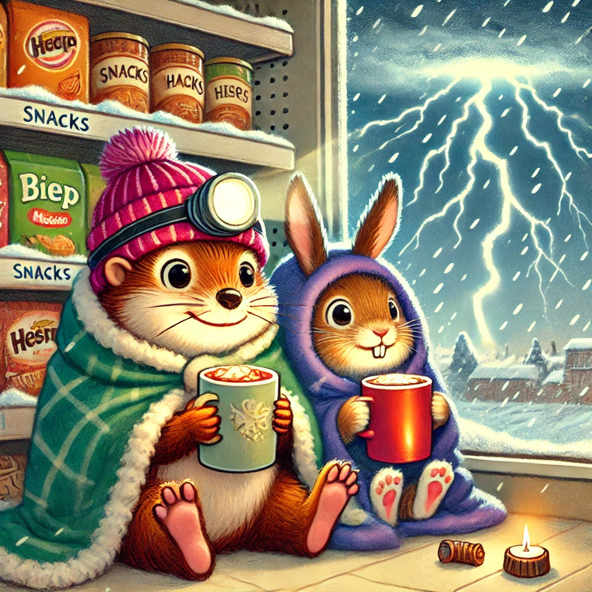
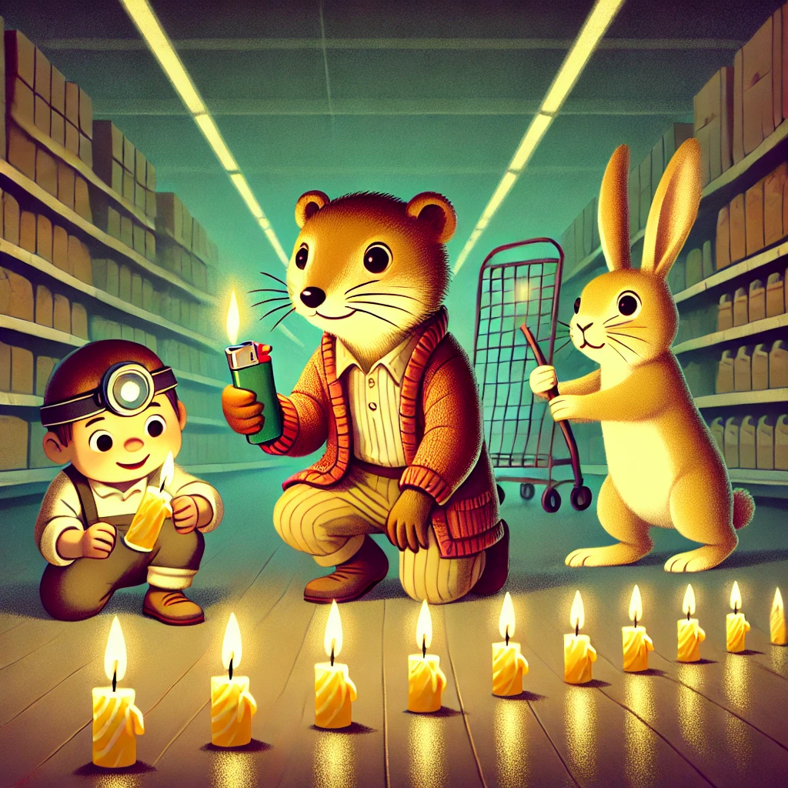
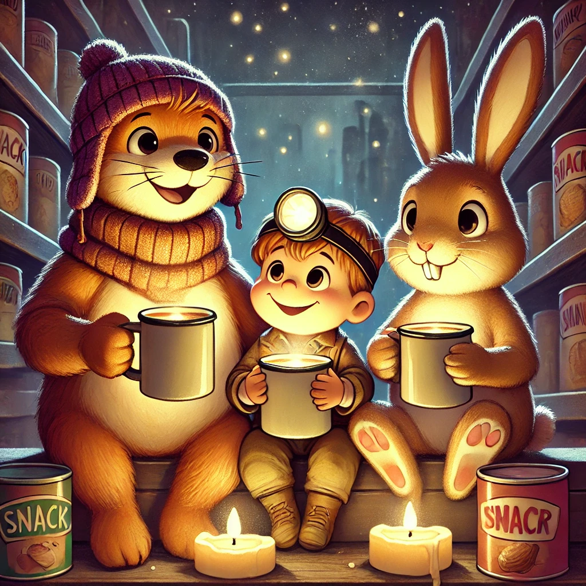

Es war einmal ein Wiesel namens Winnie, das oben auf dem Knabbereienregal eines Supermarkts in Leknes auf den Lofoten wohnte. Eines Tages zog ein schweres Unwetter über die Lofoten. Winnie, Biep und Herr Hase, eingemummelt in dicke Decken und mit einer heißen Schokolade ausgestattet, quietschten jedes Mal fröhlich, wenn ein gewaltiger Donnerschlag den Supermarkt erschütterte.
Die Einkaufenden waren weniger begeistert und hasteten durch die Regale, um dann zu ihren Autos zu rennen und hoffentlich sicher nach Hause zu kommen. Herr Hase setze gerade an, eine Geschichte über den Sturm von 1899 zu erzählen, als plötzlich das Licht ausging.
Auf einen kurzen Augenblick der Stille folgte panisches Flüstern, das immer lauter wurde und ziemlich schnell zu einem chaotischen Konzert aus weinenden Babies und aufgeregten Erwachsenen wurde. Die drei Freunde - eher neugierig als panisch - schauten einander an: "Mist", sagte Winnie, die mit ihren Wieselaugen im Dunkeln exzellent sehen konnte. "Die armen Menschen hier rennen uns noch das Knabbereienregal um. Die sind blind wie Maulwürfe."
Biep, der sein Barcodescanner Licht auf "an" gestellt hatte, nickte und Herr Hase, dessen Augen sich auch an die Dunkelheit gewöhnt hatte und der die Menschen in der unmittelbaren Nähe des Knabbereienregals im Auge behielt, sagte schnell: "Wir müssen helfen!" "Ich hab's!" Biep war ganz aufgeregt. "Los, mir nach!" Und los ging die Ralley kreuz und quer im Dunkeln durch Beine hindurch, an Kinderwägen vorbei und direkt zu den Regalen mit den Papptellern und den Geburtstagsdekorationen.
Biep griff sich alle Tortenkerzen, die er finden konnte. "Wir müssen einen Notausgangspfad beleuchten. Wie die Landebahn für ein Flugzeug.", teilte er seinen Plan mit. Winnie und Herr Hase waren sofort dabei. Winnie krallte sich noch ein Feuerzeug und schon rannten die drei links und recht und oben und unten durch den Supermarkt und verteilten Kerzen, die sie direkt anzündeten. Die Leute atmeten auf und das chaotische Konzert wich einem begeisterten Staunen und dann sogar Applaus.
Sicher fanden die Leute nach und nach den Weg hinaus zu ihren Autos, die dank der Batterien Licht hatten. Zufrieden zogen die drei Helden sich zurück auf ihr Knabbereienregal und machten sich eine zweite Tasse heiße Schokolade. Die hatten sie sich verdient.
